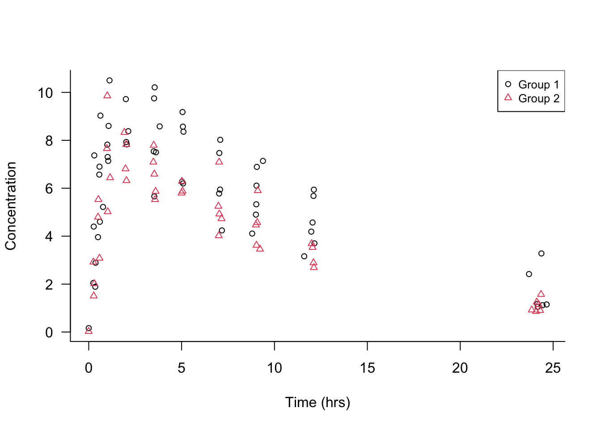

6 Data Literacy
Data literacy is the ability to understand, interpret, critically evaluate, and effectively communicate data in context. It is not a technical skill but a fundamental capability for everyone. Can you explain what these statements mean?
- The chance of rain tomorrow is 30%.
- The estimated total number of trees on earth is 3.04 trillion with a margin of error of 0.1 trillion.
- The median income in the US in 2022 was $37,585.
- The drug shows a significant number of adverse side effects.
- The cancer screening test has a false positive rate of 12%.
Key skills of the data literate person are to
- Understand and critique conclusions based on data
- Assess the trustworthiness of claims based on data (processing)
- Transform raw data into insights
This module covers a number of concepts and topics around data and data analysis that help you become more data literate.
6.1 Uncertainty
6.2 Signal and Noise
Separating the signal from the noise is a key objective in all data analysis. The signal represents the systematic, non-random effects in the data. Data scientists and statisticians define the noise as the unpredictable randomness around the signal. A slightly different, and also useful, definition of noise stems from intelligence analysis. The signal is the information we are trying to find, the noise is the cacophony of other information that obscures the signal. That information might well be a signal for something else but it is irrelevant or useless for the event the intelligence analyst is trying to predict.
Information not being relevant for the signal we are trying to find is the key. In the view of the statistician, that information is due to random events.
Finding the signal is not trivial, different analysts can arrive at different models to capture it. Signals can be obscured by noise. What appears to be a signal might just be random noise that we mistake for a systematic effect.
Example: Theophylline Concentration
Figure 6.1 shows the concentration of the drug theophylline over 24 hours after administration of the drug in two groups of patients. There are 98 data points of theophylline concentration and measurement time. What are the signals in the data? What is noise?
The first observation is that the data points are not all the same over time, otherwise they would fall on a horizontal straight line: there is variability in the data. Separating signal and noise means attributing this variability to different sources: some systematic, some random.
Focusing on either the open circles (group 1) or the triangles (group 2), you notice that points that are close in time are not necessarily close in the concentration measurement. Not all patients were measured at exactly the same time points, but at very similar time points. For example, concentrations were measured after about 7, 9, and 12 hours. The differences in the concentration measurements among the patients receiving the same dosage might be due to patient-to-patient variability or measurement error.
Focusing on the general patterns of open circles and triangles, it seems that the triangles appear on average below the average circle a few hours after administration. Absorption and elimination of theophylline appears to behave differently in the two groups.
Much of the variability in the data seems to be a function of time. Shortly after administering the drug the concentration rises, reaches a maximum level and then declines as the drug is eliminated from the body. Note that this sentence describes a general overall trend in the data here.
Which of these sources of variability are systematic—the signals in the data— and which are random noise?
Patient-to-patient variability within a group at the same time of measurement: we attribute this to random differences among the participants.
Possible measurement errors in determining the concentrations: random noise
Overall trend of drug concentration over time: signal
Differences among the groups: signal
These assignments to signal and noise can be argued. For example, we might want to test the very hypothesis that there are no group-to-group differences. If that hypothesis is true, any differences between the groups we discern in Figure 6.1 would be due to chance; random noise in other words.
The variability between patients could be due to factors such as age, gender, medical condition, etc. We do not have any data about these attributes. By treating these influences as noise, we are making important assumptions that their effects are irrelevant for conclusions derived from the data. Suppose that the groups refer to smokers and non-smokers but also that group 1 consists of mostly men and group 2 consists of mostly women. If we find differences in theophylline concentration over time among the groups, we could not attribute those to either smoking status or gender.
A common reason to mistake signal for noise is overfitting a model, a concept we return to in Section 6.5.1.
Another reason is if there is simply no signal at all. Figure 6.2 is taken from Silver (2012, 341) and displays six “trends”. Four of them are simple random walks, the result of pure randomness. Two panels show the movement of the Dow Jones Industrial Average (DJIA) during the first 1,000 trading days of the 1970s and 1980s. Which of the panels are showing the DJIA and which are random noise?

What do we learn from this?
Even purely random data can appear non-random over shorter sequences. We can easily fall into the trap of seeing a pattern (a signal) where there is none. After drawing two unlikely poker hands in a row there is not a greater chance of a third unlikely hand unless there is some systematic effect (cards not properly shuffled, game rigged). Our brains ignore that fact and believe that we are more lucky than is expected by chance.
Data that contains clear long-run signals—the stock market value is increasing over time—can appear quite random on shorter sequences. One a day to day basis predicting whether the market goes up or down is very difficult. In the long run ups and downs are almost equally likely. Upswings have a slight upper hand and on average are greater than the downswings, increasing the overall value in the long term. Traders who try to beat the market over the short run have their work cut out for them.
By the way, panels D and F in Figure 6.2 are from actual stock market data. Panels A, B, C, and E are pure random walks. It would not be surprising if investors would bet money on “trend” C.
6.3 Accuracy and Precision
The terms accuracy and precision are often used interchangeably. In the context of measurement and data analysis they mean different things and the distinction is important.
When talking about measuring devices, accuracy and precision are defined as
- Accuracy: How close are measurements to the true value
- Precision: How close are measurements to each other
When folks say that something is precise, what they often mean is that it is accurate. For example, when you measure something that is 8 feet long with a tape measure and the tape reads 8 feet, then it is accurate. If you repeat the measurement several times and all readings are close to 8 feet, then the tape (and you as its operator) is precise.
Precision refers to the repeatability of a method, accuracy refers to its proximity to a target value.
To demonstrate the difference between accuracy and precision, the dart board bullseye metaphor is helpful. Figure 6.3 shows four scenarios of shooting four darts each at a dart board. Suppose we are trying to hit the bullseye in the center of the board; it is the true value we are trying to measure.
Pattern A is the result of a thrower who is neither accurate nor precise. The throws vary greatly from each other (lack of precision), and the average location is far from the bullseye (inaccurate).
Pattern B is the result of a thrower who is inaccurate but precise. The throws group tightly together (high precision) but the average location misses the bullseye (the average distance from the bullseye is not zero).
Pattern C is typical for a player who is not precise, but accurate. The throws vary widely (lack of precision) but the average distance of the darts from the bullseye is close to zero—on average the thrower hits the bullseye.
Pattern D is that of an accurate and precise player; the darts group tightly together and are centered around the bullseye.

Another way to phrase accuracy and precision are in terms of the distribution of the measurements. Accuracy is about the average (central tendency) of the values, precision is about their variability. A statistical method that is not accurate—does not hit the target on average—is said to be biased.
Why do we worry about the distinction of precision and accuracy?
If we have a choice among different methods of drawing conclusions from data, we would opt for the one that is most precise and most accurate. To decide whether to buy, hold, or sell stock of company X, it would be great if we can forecast the stock value accurately and precisely. Imagine that you are the coach of the dart team. It is the end of the tournament, your team has one last dart left to throw; the team that gets closest to the bullseye will win the tournament. Which of the four types of players would you ask to make the throw? The precise and accurate player D is the safe bet.
Unfortunately, we often do not have the luxury of a uniformly optimal method that has no bias and highest precision among all methods. We often need to make a compromise, and that means we have to weigh precision and accuracy against each other.
Statisticians historically resolve the tension by demanding that methods are accurate (have zero statistical bias). Among all competing methods in that collection they then choose the one that has the highest precision (smallest variance). That is a reasonable approach especially if accuracy is most important.
However, it is possible that the most precise unbiased method is much more variable than a biased method. In the dartboard example, if player D has retired from the sport, then we might bet on player B for the last throw. She has a higher likelihood of getting close to the bullseye than the more erratic—but close on average—player C.
We also worry about the distinction between accuracy and precision because our confidence in statements about data should include both. The precision of a method translates into uncertainty about its results. An imprecise method leads to uncertain conclusions. Pundits who offer ostensibly expert opinions about topics frequently provide predictions without telling us how precise they are:
- “Candidate A is ahead of candidate B by three points.”
- “Inflation will decrease by half a point in the next quarter.”
- “60% of adults between 35 and 45 support this legislation.”
- “The average temperature on the planet will increase by 1.4 degrees centigrade by 2030”.
These statements let us tacitly assume that the prediction is accurate and infinitely precise. If accompanied by a measure of precision—that is, uncertainty—the message is much more nuanced:
“Candidate A is ahead of candidate B by three points. The margin of error is +/- 5 points”.
The margin of error covers the possibility that candidate B is in the lead.
“The average temperature on the planet will increase by 1.4 degrees centigrade by 2030”. The 95% prediction interval in 2030 ranges from 0.2 to 2.6 degrees.
6.4 Causation and Correlation
Observational and experimental data
6.5 Bias and Variance Tradeoff
Overfitting
Underfitting
6.6 All Models are Wrong–Some are Useful
In a 1976 paper, George E.P. Box declared “All models are wrong” (Box 1976). Later, he added a qualification which turned into a frequently cited quote about modeling:
All models are wrong, some are useful. (Box and Draper 1987, 424).
Compartmental Models in Epidemiology
SIR (Susceptible–Infectious–Recovered) model is a standard class of compartmental models in epidemiology, describing how an infectious disease moves through a population. On the surface this makes sense: at each point in time an individual is in one of three states, called compartments:
- You have not had the disease but you are susceptible to it (S compartment)
- You are infected by the disease (I compartment)
- You are recovered from the disease, or dead (R compartment)
A vaccination, then, is a shortcut that moves an individual directly from the S to the R compartment, bypassing the infected state.
However, there are a number of assumptions in the SIR model that can invalidate the model for some diseases and circumstances:
- The disease progresses in only one direction, from S to I to R.
- Everyone is equally susceptible and behaves the same way
- Everyone is equally likely to be vaccinated, if a vaccine is available
- All members of the populations intermingle at random
The rate at which the disease spreads through the population is measured by the basic reproduction number, \(R_0\). This number, which we became all too familiar with during the COVID-19 pandemic, measures the number of uninfected people expected to catch the disease from an infected individual. An \(R_0\) of 3 means that someone who contracts the disease is expected to pass it on to three other individuals. In the absence of vaccines or quarantines, any disease with \(R_0 > 1\) will eventually spread to the entire population.
6.7 Agent-based Models
A different tactic than to rely on sophisticatedly simple models that abstract the essence of the thing we wish to study is to simulate the process in all its complexity, essentially building a digital twin of the thing we wish to study.
That is essentially the approach taken in weather prediction. Rather than relying on statistical models that predict based on historical data, weather predictions are based on complex physical simulations of the atmosphere.